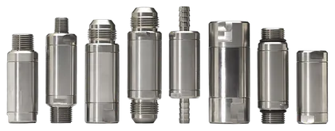

Build your valve
The patented Strataflo modular system: a valve body and poppet system, with end connections of any type on each side. Highly customized, at an affordable price point.

Configure a modular valve
End caps carry a universal valve seat and adjoining thread, so each end is chosen on its own. If the standard ends are not enough, custom ends can be designed for a truly unique fit.
From pipe threads to hydraulic ends
The modular line is the Strataflo Fusion™ design: the same proprietary poppet system inside, and a wide selection of standard ends outside. Hose barb for hose, pipe threads for plumbing, flared JIC and SAE O-ring boss for hydraulics.
Need fewer modifications? The standard line has more than fifty valves, in sizes and specifications for almost any application.
See the standard line